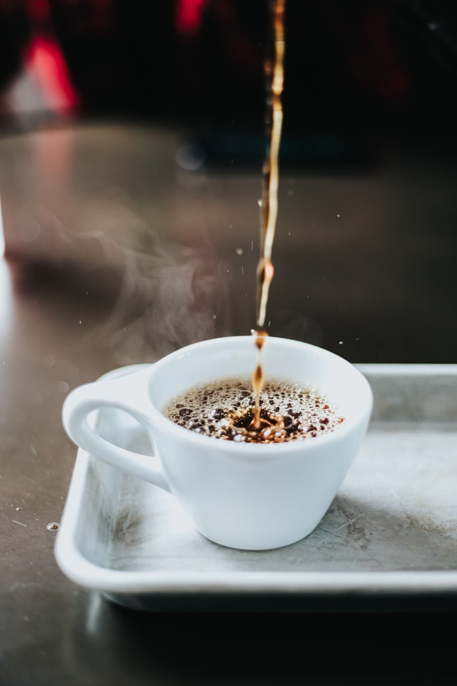

Best SellerKopi • Panas / Es
Kopi Tubruk Sederhana
Robusta Temanggung pekat, gula aren asli. Pahit-manis klasik khas warung.
Rp15.000Reguler 200ml
Pesan
Semua diseduh saat dipesan. Pilih kategorinya, klik pesan, dan kami siapkan dalam < 5 menit.